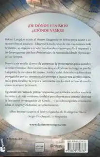

Origen

Sipnosis
España es el escenario donde se sitúa la nueva novela de Dan Brown, Origen.
Barcelona, Bilbao, Madrid y Sevilla son las ciudades principales en las que transcurre la nueva aventura de Robert Langdon
Robert Langdon, profesor de simbología e iconografía religiosa de la universidad de Harvard, acude al Museo Guggenheim Bilbao para asistir a un trascendental anuncio que «cambiará la faz de la ciencia para siempre». El anfitrión de la velada es Edmond Kirsch, un joven multimillonario cuyos visionarios inventos tecnológicos y audaces predicciones lo han convertido en una figura de renombre mundial. Kirsch, uno de los alumnos más brillantes de Langdon años atrás, se dispone a revelar un extraordinario descubrimiento que dará respuesta a las dos preguntas que han obsesionado a la humanidad desde el principio de los tiempos.
¿DE DÓNDE VENIMOS? ¿ADÓNDE VAMOS?
Al poco tiempo de comenzar la presentación, meticulosamente orquestada por Edmond Kirsch y la directora del museo Ambra Vidal, estalla el caos para asombro de cientos de invitados y millones de espectadores en todo el mundo. Ante la inminente amenaza de que el valioso hallazgo se pierda para siempre, Langdon y Ambra deben huir desesperadamente a Barcelona e iniciar una carrera contrarreloj para localizar la críptica contraseña que les dará acceso al revolucionario secreto de Kirsch.
Perseguidos por un atormentado y peligroso enemigo, Langdon y Ambra descubrirán los episodios más oscuros de la Historia y del extremismo religioso. Siguiendo un rastro de pistas compuesto por obras de arte moderno y enigmáticos símbolos, tendrán pocas horas para intentar desvelar la fascinante investigación de Kirsch… y su sobrecogedora revelación sobre el origen y el destino de la Humanidad.
ORIGEN se desarrolla íntegramente en España. Barcelona, Bilbao, Madrid y Sevilla son los escenarios principales en los que transcurre la nueva aventura de Robert Langdon. De la mano del autor de El código Da Vinci, el lector recorrerá escenarios como el Monasterio de Montserrat, la Casa Milà (La Pedrera), la Sagrada Familia, el Museo Guggenheim Bilbao, el Palacio Real o la Catedral de Sevilla.
Como ya sucedió con París en El código Da Vinci, con Roma en Ángeles y demonios o con Florencia en Inferno, los escenarios de las novelas de Dan Brown siempre han sido un elemento clave en sus tramas.
Editorial: Editorial Planeta
Temática: Novela contemporánea, General Novela
Idioma: Español
Traductor: Aleix Montoto Llagostera
Número de páginas: 640
Fecha: Dom, 04/10/2020 - 12:00
Precio: 22.50€
Referencia (ISBN): 9788408206163
Volver
Autor: Dan Brown

Daniel «Dan» Brown es un escritor estadounidense conocido por la novela El código Da Vinci (2003) y otros títulos protagonizados por el personaje Robert Langdon.
Dan Brown ha vendido más de 234 millones de ejemplares de su obra en todo el mundo y sus libros han sido traducidos a 56 idiomas. Es el autor de grandes best sellers internacionales como El código Da Vinci, que a día de hoy sigue siendo el libro más vendido en español con más de ocho millones de ejemplares, Origen, Inferno, El símbolo perdido, Ángeles y demonios, La conspiración y Fortaleza digital.